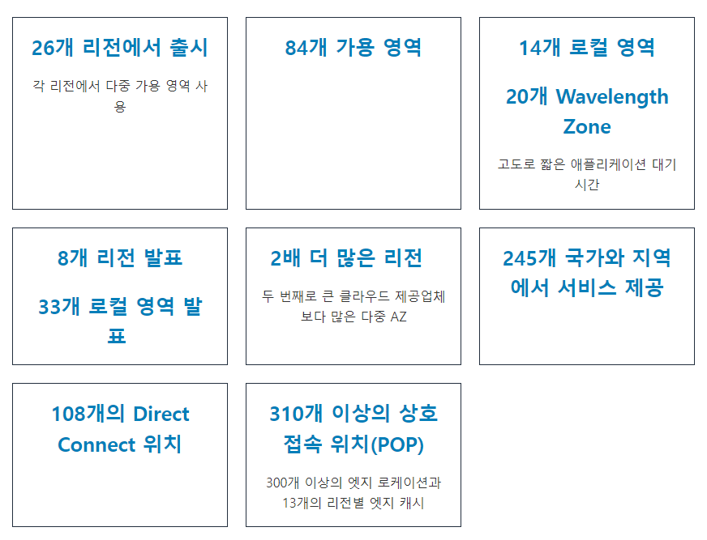
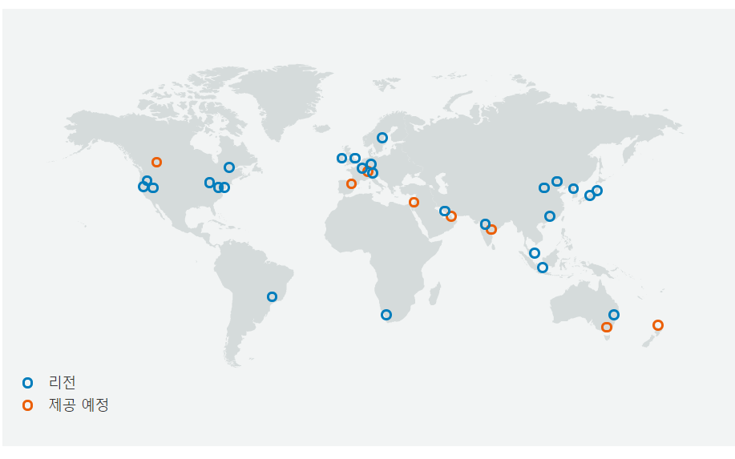

AWS란?
Amazon Web Service는 전 세계적으로 분포한 데이터 센터에서 200개가 넘는 완벽한 기능의 서비스를 제공하는, 세계적으로 가장 포괄적이며, 널리 채택되고 있는 클라우드 플랫폼이다.
빠르게 성장하는 스타트업, 가장 큰 규모의 엔터프라이즈, 주요 정부 기관을 포함하여 수백만 명의 고객이 AWS를 사용하여 비용을 절감하고, 민첩성을 향상시키고 더 빠르게 혁신하고 있다.
AWS 인프라 사진 출처 : aws
더 많은 기능
AWS는 컴퓨팅, 스토리지, 데이터베이스와 같은 인프라 기술부터 기계 학습 및 인공 지능, 데이터 레이크 및 분석, 사물 인터넷 등의 새로운 기술까지 다른 클라우드 공급자보다 훨씬 더 많은 서비스와 서비스 내 기능을 제공한다. 이를 통해 더 빠르고, 쉽고, 경제적으로 기존 애플리케이션을 클라우드로 이동하고 상상할 수 있는 거의 모든 것을 구축할 수 있다.
AWS는 또한 이러한 서비스 내에서 가장 전문적인 기능을 갖추고 있다. 예를 들어, AWS는 최고의 성능과 비용을 위해 작업에 적합한 도구를 선택할 수 있도록 여러 유형의 애플리케이션에 맞게 특별히 구성된 다양한 데이터베이스를 제공한다.
가장 큰 규모의 고객 및 파트너 커뮤니티
AWS는 전 세계적으로 수백만 명의 활동 고객과 수만 개의 파트너로 이루어진 가장 역동적인 최대 규모의 커뮤니티를 갖추고 있다. 스타트업, 엔터프라이즈, 공공 부문의 조직을 비롯해 규모에 상관없이 거의 모든 산업의 고객이 AWS에서 다양한 사용 사례를 운영하고 있다. AWS 파트너 네트워크(APN)는 AWS 서비스를 전문적으로 다루는 수천 개의 시스템 통합 사업자와 AWS에서 사용할 수 있도록 자체 기술을 조정하고 있는 수만 개의 Independent Software Vendor(ISV)로 구성되어 있다.
가장 뛰어난 보안
AWS는 현존하는 플랫폼 중 가장 유연하고 안전한 클라우드 컴퓨팅 환경으로 설계되었다. AWS의 핵심 인프라는 군사, 국제 은행 및 보안이 매우 중요한 조직의 보안 요구 사항을 충족하도록 설계되었다. 230개의 보안, 규정 준수 및 거버넌스 서비스와 기능을 포함하는 심층적인 클라우드 보안 도구 세트가 이를 뒷받침한다. AWS는 90개의 보안 표준과 규정 준수 인증을 지원하며, 고객 데이터를 저장하는 117개의 모든 AWS 서비스에서 해당 데이터를 암호화하는 기능도 제공한다.
가장 빠른 혁신 지원
AWS를 사용하면 최신 기술을 활용하여 더 빠르게 경험하고 혁신할 수 있다. 우리는 지속적으로 혁신 속도를 가속화하여 비즈니스 변혁에 사용할 수 있는 완전히 새로운 기술을 발명하고 있다. 예를 들어 2014년, AWS는 개발자가 서버를 프로비저닝하거나 관리하지 않고 코드를 실행할 수 있는 AWS Lambda 출시로 서버 없는 컴퓨팅 공간을 개척했다. 그리고 AWS는 개발자와 과학자가 어떠한 경험 없이도 기계 학습을 사용할 수 있게 하는 완전관리형 기계 학습 서비스인 Amazon SageMaker를 개발했다.
AWS 리전의 글로벌 네트워크
AWS는 가장 광범위한 글로벌 클라우드 인프라를 갖추고 있다. AWS만큼 많은 리전에서 대기 시간이 짧고 처리량이 많으며 고도로 이중화된 네트워킹으로 연결된 여러 가용 영역을 운영하는 클라우드 공급자는 없다. AWS는 전 세계 26개의 지리적 리전 내에 84개의 가용 영역을 운영하고 있으며, 앞으로 오스트레일리아, 캐나다, 인도, 이스라엘, 뉴질랜드, 스페인, 스위스 및 아랍에미리트(UAE)에 8개의 AWS 리전과 24개의 가용 영역을 추가할 계획이다. Gartner는 고가용성이 필요한 엔터프라이즈 애플리케이션을 실행하기 위한 권장 접근 방식으로서 AWS 리전 및 가용 영역 모델을 인정했다.
AWS 글로벌 인프라 맵 사진 출처 : aws